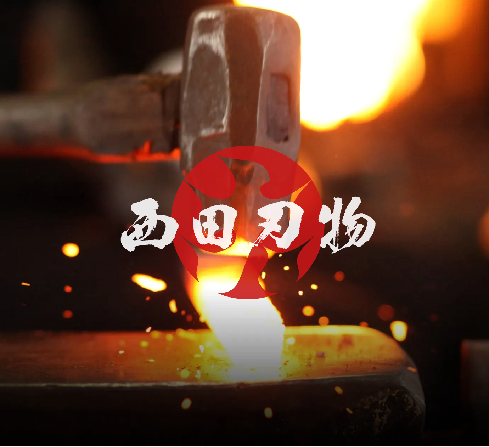
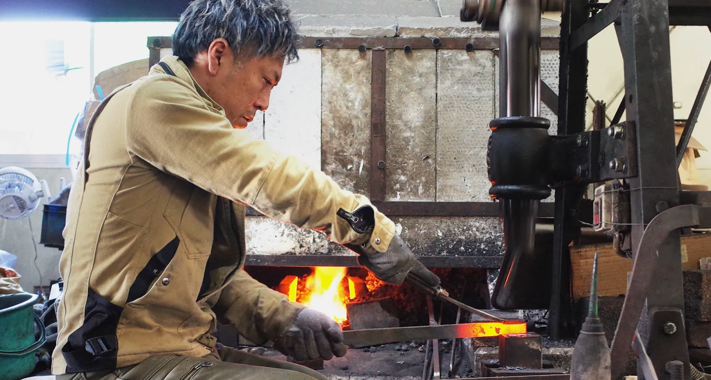
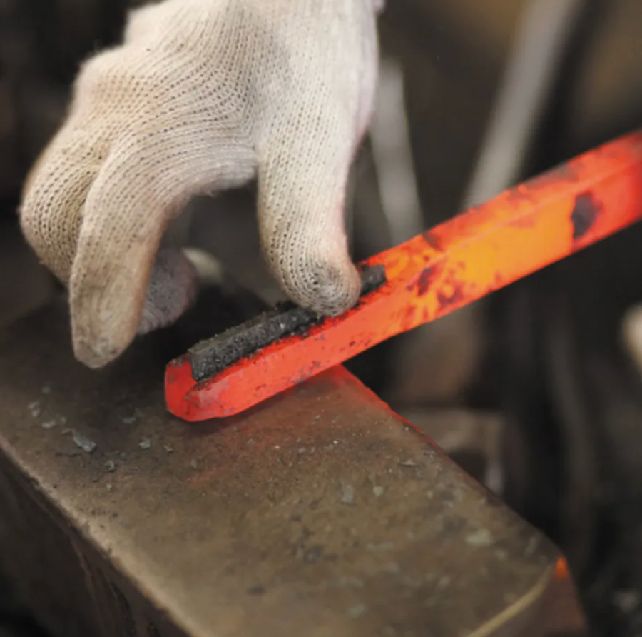
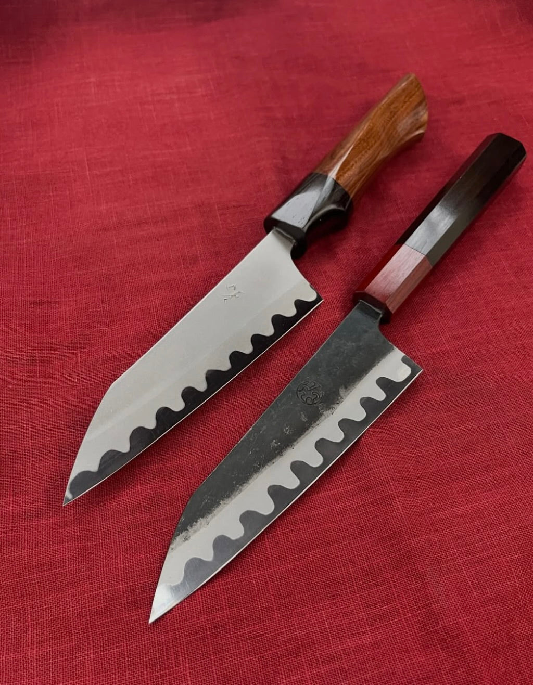
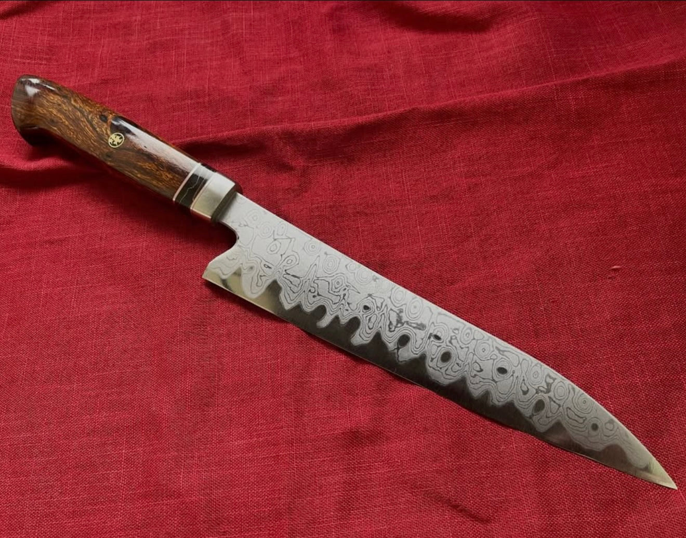
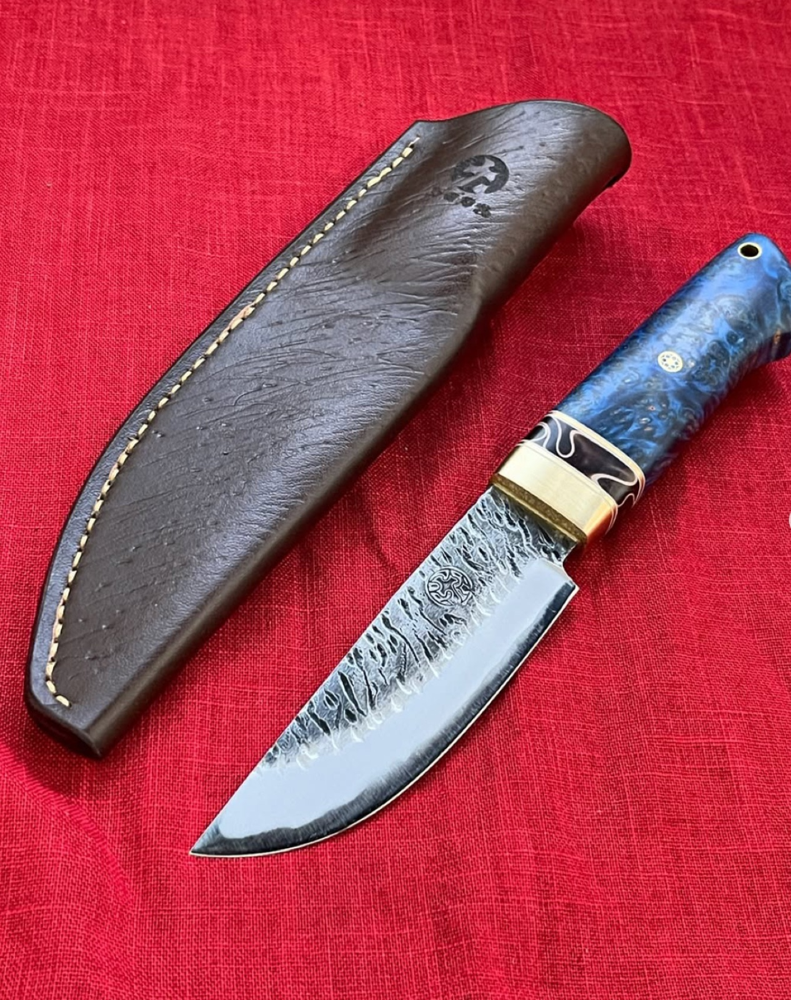

西田刃物工房 · Nishida Hamono Kōbō · Kumamoto, Kyushu
本物の和の包丁
Hand-forged in Kumamoto. Every blade made by one smith. No shortcuts.

Photo: 西田刃物工房 提供
The Craftsman
Daisuke Nishida began his apprenticeship at a forge at the age of 19. He became independent in 2006 at 28, in Kumamoto, Kyushu. His knives follow hon-warikomi (本割込み), a forging tradition inherited from ancient Japan. This method defines what a true wa-bōchō is.
He holds a firm belief: Japanese blade technology is the finest in the world. Hon-warikomi demands extraordinary time and skill. That belief is reflected in every knife he makes.
Every Step
Most knives, even premium ones, pass through multiple hands on a production line. Nishida-san does all four himself.
Made by one craftsman.
The Technique
Inherited from ancient Japan, hon-warikomi (本割込み) is a forging tradition passed down through generations of Japanese smiths. The soft iron (地金, jigane) is split with a chisel, the hard steel (鋼, hagane) placed inside, and the two hammer-welded together at precise temperature. Every step is done entirely by hand.
Roughly 100 years ago, machine-laminated blade stock (利器材) was invented and gradually replaced hand-forging across most of the industry. Today it is used in nearly every production knife. Hon-warikomi survives among only a small number of traditional smiths. Nishida-san is one of them.
Core Steel of Hon-Warikomi
The hagane (芯材) placed at the core of hon-warikomi is Shirogami No. 1 (白紙一号鋼). It is a high-purity carbon steel with very few added alloys. The high carbon content makes it exceptionally hard, capable of taking one of the finest edges among Japanese blade steels.
That hardness also makes it brittle. Without support, the edge chips. Traditional Japanese smiths solved this through hon-warikomi: the hard steel core is wrapped inside soft iron (地金, jigane). The soft iron absorbs shock and prevents chipping. Hard at the cutting edge. Tough through the body.
That hardness comes at a cost beyond chipping. The heat treatment window is narrow. A few degrees too hot or too cold, and the steel is ruined. There is no correction. Smiths who can work with it correctly are extremely rare today.

Photo: 西田刃物工房 提供
In the Workshop
In 2020, NHK visited the Nishida Hamono Kōbō workshop. The full broadcast is below.
The Work
A selection of 西田刃物工房's custom work.

Photo: 西田刃物工房 提供

Photo: 西田刃物工房 提供

Photo: 西田刃物工房 提供